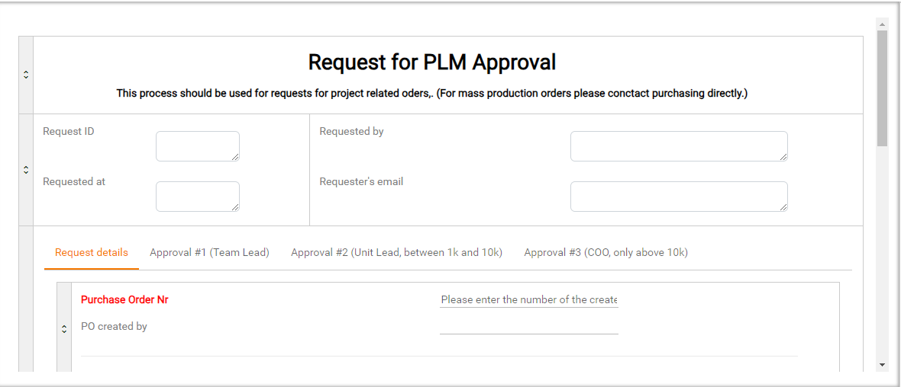
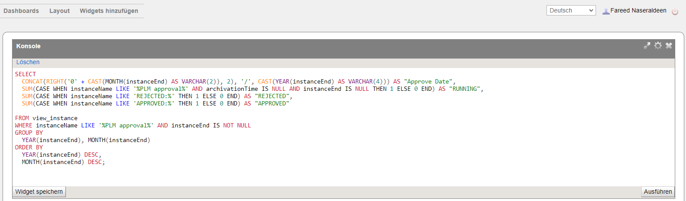

Process Designer
Why does companies process documentation and process design
A company needs process documentation and process design to ensure consistency and efficiency in its operations.
Proper documentation provides clear guidelines and standards, reducing errors and improving quality control.
It facilitates training and onboarding of new employees, ensuring they understand their roles and responsibilities.
Well-designed processes streamline workflows, enhancing productivity and resource management.
Additionally, documentation supports compliance with industry regulations and standards, reducing legal and operational risks.
Overall,
it enables continuous improvement by providing a basis for evaluating and refining business practices.
Our company has initiated a major project focused on process documentation, design, and automation.
As seen in the picture below, we used Adonis for process documentation.
The documented processes will then be exported to Tim-Solution, where process automation will be implemented.

You cannot imagine the feedback from the users of the automated process after they started using the smart form
in Tim-Solution. They were very happy and excited because there were no more Excel sheets, paper, or emails.
Everything is done automatically in the smart form. This new system has streamlined their workflow, making tasks
quicker and more efficient. Users have appreciated the increased accuracy and reduced manual effort,
allowing them to focus on more critical aspects of their work.
Overall, the transition to the smart form has significantly improved user satisfaction and productivity.

As most of the processes are now automated and documented, we can easily
initiate dashboards in Tim-Solution using SQL. These dashboards provide our management
with a better overview of our resources, allowing for more informed decision-making. They help track key performance indicators, monitor progress, and identify areas for improvement. The visual representation of data makes it easier to analyze trends and allocate resources efficiently. Overall, the dashboards are very
helpful in enhancing our operational efficiency and strategic planning.
